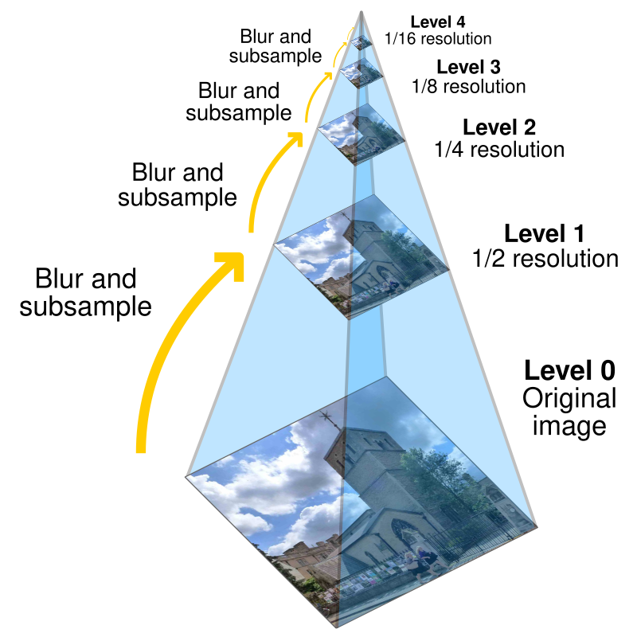

Overview
In the 1900s, Sergei Mikhailovich Prokudin-Horskii traveled around the
Russian Empire performing groundbreaking work in color photography.
Prokudin-Horskii recorded various scenes three times onto red, green,
and blue filtered glass plates. Given digitized versions of these glass
plate negatives, my goal for this project was to extract the r, g, and b
channels from their respective plates and align them together, forming a
single RGB image to recreate a fully-colored photograph. First, I
implemented an exhaustive search algorithm that aligns small images; I
also implemented pyramid search to align large images efficiently.
Finally, I polished my results with some bells and whistles.
Section I: Exhaustive Search
Overview
To align small .jpg files, I split each image into its r, g, and b
channels, treating the b channel as the template. Then, I performed
naive grid search by exhaustively searching through a window of
displacements [-15, 15] pixels large. I scored each (x, y) displacement
with an image matching metric, keeping track of the one with the best
metric and returning it as the most optimal displacement. Finally, I
used circular translate to displace the r and g channels, stacking all
of the channels on top of each other to produce an aligned and
fully-colored photograph. After comparing the results of minimum
Euclidean distance with those of the maximum normalized
cross-correlation, I settled on NCC as my image metric, as it seemed to
produce better alignments.
Some border artifacts were affecting the calculations, so I hardcoded
cropping by slicing a 15% margin from the sides of each channel before
alignment. I realized that I should align the uncropped images for my
final result, as the images looked zoomed in otherwise.
Results
cathedral.jpg

g: (2, 5), r: (3, 12)
monastery.jpg

g: (2, -3), r: (2, 3)
tobolsk.jpg

g: (3, 3), r: (3, 6)
Section II: Pyramid Search
Overview
Performing exhaustive search on large images becomes prohibitively
expensive, as the window size must scale with the image size. To
efficiently align even large .tif files, I implemented a recursive
pyramid search method that aligns .tif files in about 10 seconds.
Conceptually, I start with the original image, then scale down until
the image is small enough for naive exhaustive search. As I travel
back down the pyramid, I scale each image and displacement from the
previous level until I arrive back at the original image.
For images smaller than 256 x 256 pixels, I performed naive
exhaustive search with a window size of [-15, 15]—this served as my
base case. Otherwise, I scaled both images down by 2 and recursively
calculated their best displacement. I scaled this displacement up by
2 so it would accurately align an image with twice the height and
width, then rolled the original image by the scaled displacement.
Finally, I performed exhaustive search to find the displacement
between the rolled image and the template. I incremented these
displacements for my final displacement.
To optimize further, I also updated the window size for exhaustive
search at each level. The smallest image uses [-15, 15] window,
which is decreased by 2 at each subsequent level until reaching a
minimum range of [-4, 4]. This way, I'm not searching across a wider
range than necessary at any level.
The pyramid search method worked on all of the images except for
emir.tif, likely due to the difference in brightness between its red
and blue channels. I address this in Bells & Whistles.

Results
church.tif

g: (4, 25), r: (-4, 58)
three_generations.tif

g: (13, 52), r: (11, 111)
melons.tif

g: (10, 81), r: (13, 178)
onion_church.tif

g: (27, 51), r: (36, 108)
train.tif

g: (6, 42), r: (32, 87)
icon.tif

g: (17, 41), r: (23, 89)
self_portrait.tif

g: (29, 78), r: (37, 176)
harvesters.tif
g: (17, 59), r: (13, 123)
sculpture.tif

g: (-11, 33), r: (-27, 140)
lady.tif
g: (8, 52), r: (11, 113)
emir.tif
g: (2, -3), r: (2, 3)
Section III: Bells & Whistles
Edge Detection
I explored two different ways of correcting emir.tif: color mapping and
edge detection.
Simply aligning the b and r channels to the g channel instead of the
original color mapping produced an improved result.
I also looked into edge detection with Sobel filters, which can locate
edges by finding pixels with a larger relative magnitude. Instead of
comparing brightness values between pixels, I aligned images based on
their edges, producing improved results as well.
Results
Original
g: (2, -3), r: (2, 3)
Color mapping

b: (-49, -24), r: (57, 17)
Edge detection

g: (23, 49), r: (40, 107)
Auto-Contrast
To keep my results from looking washed out, I applied adaptive histogram
equalization on the final images. Histogram equalization improves
contrast by redistributing an image's luminance values. Adaptive
histogram equalization does this locally for multiple parts across an
image, yielding more natural-looking results.
Results
train.tif
Without contrast
lady.tif
Without contrast
three_generations.tif
Without contrast
Auto-Crop
Most of the images have black and white borders that cause artifacts when aligned. To reduce the artifacts, I created an auto-cropping method that removes borders before alignment.
I created functions that crop the left and right sides as well as the top and bottom. First, I look through a “strip” of pixels and calculate how many “black” and “white” pixels there are based on how many pixels fall under certain thresholds. I divide the number of black and white pixels by the size of the strip, then crop the strip if it meets a predetermined ratio. This method proved to be more effective at cropping thick and wonky edges than taking the average pixel brightness or going line by line.
I cropped the left and right borders from the original image before splitting it into its color channels, then cropped the top and bottom borders from each channel. I aligned the cropped images to achieve a final result with less artifacting.
Results
self_portrait.tif
g: (29, 78), r: (37, 176)
onion_church.tif
g: (27, 51), r: (36, 108)